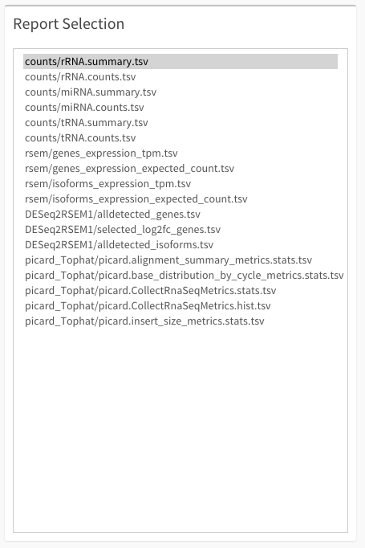
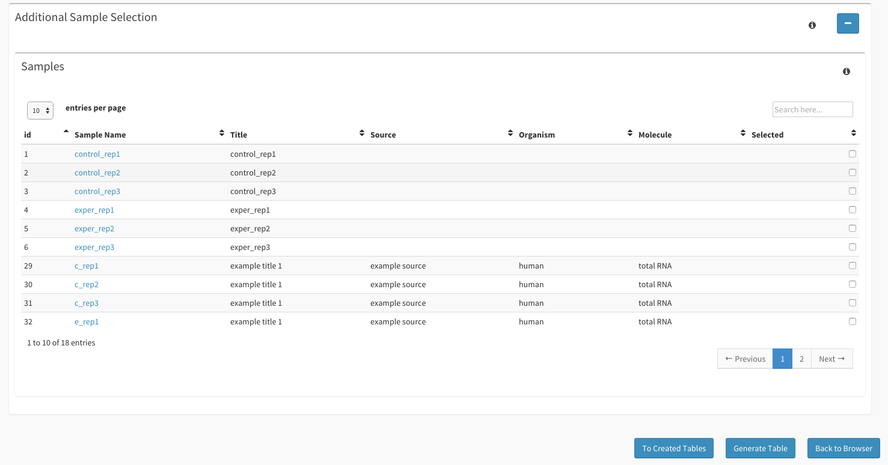

Table Creator Guide¶
This guide will walk you through all you need to know about the Table Creator page(s).
Getting Started¶
First, make sure to have an instance of dolphin available (see Dolphin Docker) as well as an account for the dolphin interface.
Once logged in, click on the ‘NGS Tracking’ tab, followed by clicking on the ‘NGS Browser’ from the dropdown to be sent to the Browser for sample selection.

Additionally, if you want to skip straight to your previous created tables, you can select the ‘Generated Tables’ tab from the ‘NGS Tracking’ tab.
Creating Custom Tables¶
Sample Selection
Once you’ve successfully made it to the Browser, select samples which have finished runs and also have reports which you would like to have merged.
As soon as you’ve selected all of your samples, you can select the ‘Generate Tables’ button to be sent to the Table Generation page.
Table Generation
Once at the Table Generation page, you will notice that the samples you have selected fill up the ‘Samples Selected’ table. Under the ‘Run ID’ column you can select which run from that samples results you wish to use.

As you select different runs, you might notice rows in the ‘Report Selection’ box dimming out. The bolded files in this page are the compatible reports in which you can merge while the dimmed out ones are incompatible or missing from one of the runs you have selected.
Once you’ve selected all the appropriate runs, you may then select the report you wish to merge within the ‘Report Selection’ box.
If you forgot any samples that you wanted to add to the table generation, you can maximize the ‘Additional Sample Selection’ and select the samples from the table generated within this box. Checking off a sample will also remove it from the ‘Samples Selected’ table.
Additionally, if you want to remove samples, you can also click on the red ‘X’ to the right of each sample within the ‘Samples Selected’ table.
When all the information is selected and you are ready to generate your table, you can then click the ‘Generate Table’ button to be taken to your generated table.
Table Generated
In the ‘Table Generated’ page, you will have the reports of the runs selected merged into one table. This table is much like the tables within the ‘NGS Reports’ page.

For external use, you can select the ‘Download Type’ button to export the table to a variety of formats:
- JSON
- JSON2
- HTML
- XML

You can also download the raw TSV file of the newly generated table or send the table to the DEBrowser (For more information on DEBrowser, see the DEBrowser section). This will only appear for rsem/mRNA/tRNA tables.
If you wish to save the table, either for easy access later or for plotting capabilities, you can name the table in the ‘Save Table As”’ tab and then click the ‘Save Table’ at the bottom of the page.
Saved Tables
Within the ‘NGS Table List’ the user can view all of their merged tables they have created and saved. You can select a few options from the options button to the right of each run:
- View
- Plot Table
- Change Permissions
- Send to DEBrowser
- Delete

Selecting ‘View’ will take you to the ‘Table Generated’ page with the report where you can save the table under a new name if you wish.
Selecting the ‘Plot Table’ will direct you to the ‘Plots’ page with your generated table selected as the input. You can also visit the ‘Plots’ page at any time and select any of your generated tables to use for input.
Change Permissions will appear if you are the owner of the generated table. You will be able to change the permissions given to this table by selection this option.
Selecting ‘Send to DEBrowser’ will allow you to send your table information straight to the DEBrowser (For more information on DEBrowser, see the DEBrowser section). This will only appear for rsem/mRNA/tRNA tables.
Selecting ‘Delete’ will remove the generated table from your list of tables.